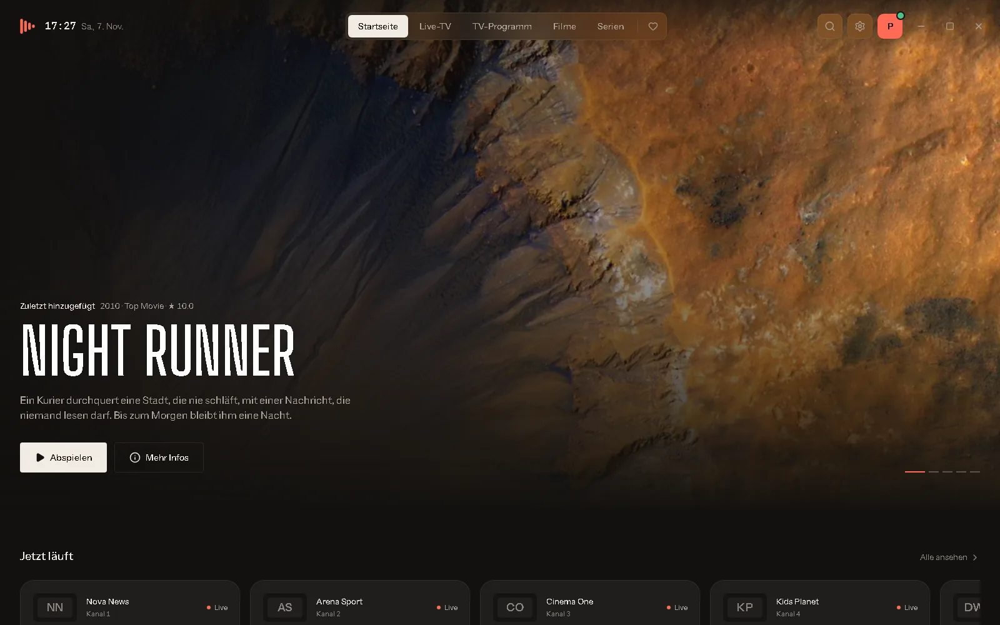
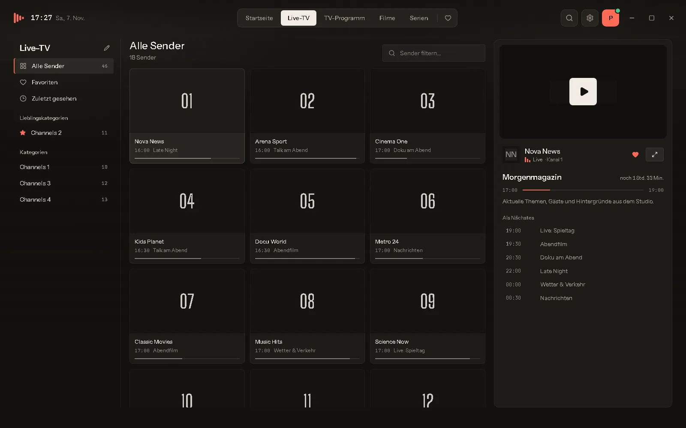

Dein IPTV.
Wunderschön abgespielt.
Sonora IPTV ist der elegante Player für Windows: Live-TV mit Programmführer, Filme und Serien aus deinem eigenen Xtream- oder M3U-Abo – schnell, übersichtlich und in deiner Sprache.

Alles, was ein IPTV-Player können muss.
Und nichts, was stört. Sonora IPTV ist auf Tempo, Übersicht und ein schönes Bild ausgelegt.
Live-TV mit Vorschau
Senderliste, Kategorien und eine große Live-Vorschau nebeneinander. Mit Bild-auf/ab springst du direkt zum nächsten Sender.
Programmführer (EPG)
Was läuft gerade, was kommt danach? Das Programm wird automatisch geladen – bei Xtream-Anbietern ganz ohne Einrichtung.
Filme & Serien
Poster, Beschreibung, Besetzung, Staffeln und Episoden – übersichtlich wie bei einem Streamingdienst. Inklusive Trailer.
Weiterschauen
Filme und Episoden starten dort, wo du aufgehört hast. Auf Wunsch läuft die nächste Folge automatisch an.
Flüssige Wiedergabe mit mpv
Die bewährte mpv-Engine ist eingebaut: Hardware-Dekodierung, Deinterlacing, Tonspuren, Untertitel und Bildformate.
Mini-Player
Weiter stöbern, während das Video läuft: Der Mini-Player lässt sich frei auf dem Bildschirm verschieben.
Suche & Favoriten
Eine Suche für Sender, Filme und Serien. Favoriten, zuletzt gesehen und eigene Lieblings-Kategorien immer griffbereit.
Sicher gespeichert
Passwörter und Playlist-Adressen liegen in der Windows-Anmeldeinformationsverwaltung – nie im Klartext.
6 Sprachen & Auto-Updates
Deutsch, Englisch, Französisch, Spanisch, Italienisch und Türkisch. Neue Versionen installiert die App mit einem Klick.
Schau's dir an.
Ein dunkles, ruhiges Design, das deine Inhalte in den Mittelpunkt stellt.

In einer Minute startklar.
Keine Zusatzprogramme nötig – der Videoplayer ist bereits enthalten.
Herunterladen
Lade die Setup-Datei über den Download-Button herunter. Sie heißt z. B. „Sonora.IPTV_1.2.1_x64-setup.exe“.
Installieren
Doppelklick auf die Datei und den Anweisungen folgen. Administratorrechte sind nicht nötig.
Anbieter hinzufügen
Sonora IPTV starten, deine Zugangsdaten eintragen – fertig. Sender, Filme und Serien werden automatisch geladen.
So richtest du Sonora IPTV ein.
Du brauchst nur die Zugangsdaten, die du von deinem IPTV-Anbieter bekommen hast.
Xtream CodesMit Benutzername & Passwort
- Öffne Einstellungen → Anbieter und klicke auf „Anbieter hinzufügen“.
- Wähle Xtream Codes und gib einen Namen ein, z. B. „Mein IPTV“.
- Trage Server-URL, Benutzername und Passwort deines Anbieters ein.
- Mit „Verbindung testen“ prüfst du die Daten, dann „Speichern“.
- Sender, Filme, Serien und der Programmführer werden automatisch geladen.
M3U / M3U8Mit Playlist-Link oder Datei
- Öffne Einstellungen → Anbieter und klicke auf „Anbieter hinzufügen“.
- Wähle M3U-/M3U8-Playlist.
- Füge die Playlist-URL ein – oder wähle eine Datei auf deinem PC.
- Optional: Link zum Programmführer (XMLTV). Meldet die Playlist selbst einen Guide, wird er automatisch genutzt.
- „Speichern“ – fertig.
Tastenkürzel im Player
| Leertaste K | Wiedergabe / Pause |
| F | Vollbild an / aus |
| M | Ton aus / an |
| ↑ ↓ | Lautstärke |
| ← → | 10 Sekunden zurück / vor |
| Bild ↑ Bild ↓ | Vorheriger / nächster Sender |
| Esc | Vollbild verlassen / Player verkleinern |
Tipps für das beste Bild
- Stream ruckelt? Unter Einstellungen → Live-TV das Live-Stream-Format auf HLS (.m3u8) stellen oder unter Wiedergabe den Netzwerkpuffer erhöhen.
- Bildfehler oder Streifen? Hardware-Decodierung ausschalten.
- Kammartige Linien bei TV-Sendern? Deinterlacing einschalten.
- Zu viele Kategorien? Über den Stift neben der Kategorienliste kannst du Kategorien ausblenden oder als Favorit nach oben holen.
- Werbung zu laut? Lautstärke angleichen aktivieren.
Läuft auf fast jedem Windows-PC.
Häufige Fragen
Bekomme ich mit Sonora IPTV Sender, Filme oder Serien?
Nein. Sonora IPTV ist ein reiner Player und enthält keinerlei Inhalte. Du brauchst ein eigenes, legales Abo bei einem IPTV-Anbieter (Xtream Codes oder M3U-Playlist).
Kostet Sonora IPTV etwas?
Nein, der Download und die Nutzung sind kostenlos und ohne Werbung.
Wie bekomme ich Updates?
Sonora IPTV prüft beim Start automatisch, ob eine neue Version da ist, und installiert sie auf Wunsch mit einem Klick. Du kannst das auch unter Einstellungen → Updates selbst anstoßen.
Sind meine Zugangsdaten sicher?
Ja. Passwörter und Playlist-Adressen werden in der Windows-Anmeldeinformationsverwaltung gespeichert – nicht in der App-Datenbank und nicht in Protokolldateien. Sie werden nur an deinen eigenen Anbieter gesendet.
Kann ich mehrere Anbieter nutzen?
Ja. Du kannst beliebig viele Anbieter hinzufügen und unter Einstellungen → Anbieter zwischen ihnen wechseln.
Das Video bleibt schwarz – was tun?
Stelle unter Einstellungen → Wiedergabe die Videoausgabe auf „Separates Fenster“. Manche Grafiktreiber vertragen die eingebettete Wiedergabe nicht. Hilft das nicht, prüfe, ob der Stream bei deinem Anbieter erreichbar ist.
Gibt es Sonora IPTV für Mac, Android oder Smart-TV?
Aktuell gibt es Sonora IPTV nur für Windows.
Wie deinstalliere ich Sonora IPTV?
Über Windows-Einstellungen → Apps → Installierte Apps → Sonora IPTV → Deinstallieren.
Bereit für besseres Fernsehen?
Lade Sonora IPTV kostenlos herunter und schau dein IPTV so, wie es aussehen sollte.
Kostenlos herunterladen